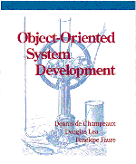
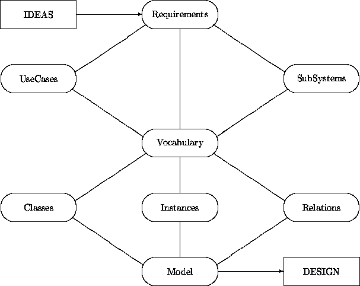
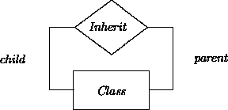

|  |
Chapter 12: The Analysis Process |
How does one proceed from the requirements to the design input?
In previous chapters, we have been discussing analysis notions and notations, culminating in the construction of a model of a target system. In this chapter, we will concentrate on the process dimension of OOA. We start off by investigating more general software development process concepts. We describe the OO analysis process abstractly, making it independent of particular tasks and developers. We informally present a partially ordered set of analysis activities within this framework. We then illustrate how OOA notions themselves can be applied to the more precise description of fragments of this generic OOA process. We compare the results to alternative approaches, and finally discuss prospects for corresponding tools.
The notion of a ``software development process'' can be interpreted in several ways:
This process emerges (provided the organization has a certain discipline) from a process plan, as described in (2) below. Such a cooperative activity can be assisted by tools that have knowledge about a particular development paradigm, that capture the output of team members, that mediate their interactions, that do version control, that do progress monitoring, etc.
Such a plan would prescribe an intended process execution as outlined in version (1). A process plan is guided by the process as defined by the paradigm used, as in (3) below, or by features of the task at hand, by corporate policies, by human and other resources, etc. Such a plan would be the basis for progress monitoring. It can be used to allocate resources, to help decide what to do in case of plan execution deviations, etc. Again we can envisage tools that assist in representing plans, deadlines, dependencies, critical paths, etc. Such tools could, of course, interact with those in version (1).
These scenarios may be seen as providing inspiration for setting up development plans as in (2). Alternatively, these development process scenarios can act as constraints on those plans.
There are also intermediate interpretations. For instance, a generic, broad brush scenario can be refined by a commitment to a given analysis paradigm. In turn, such a paradigm-specific process description can be narrowed to accommodate the specific properties of an application domain and/or of policies defined by a corporation.
Standard accounts ([5,10], and especially [9]) describe the software development process in a generally similar fashion. Their treatment of the development process is paradigm neutral. As a result, these authors describe the development process only in large-granularity components including analysis, design, implementation, compilation, debugging, etc. Our commitment to the OO paradigm allows us to be more specific. In particular, we will ``open up'' the OO analysis phase in this chapter. (We will do the same for the design phase in Chapter 15.)
In this section, we elaborate on a default sequence of steps for OO analysis:
These steps are connected by transformation -- elaboration relationships. The output of the last step, the model, feeds naturally into the design phase.
Backtracking may occur at any time. Choices made upstream may be revised on the basis of insights gathered downstream. Tool support is obviously invaluable to help decide what must be scrapped and what can be salvaged. All steps combined can also be iterated to incorporate feedback from the customer.
Whenever a requirements document already exists, the requirements step can be bypassed. It has been argued (e.g., by Ward and Brackett [15]) that the analysis phase encompasses the acquisition of the requirements as well. This would entail extracting the requirements from the customer while transcribing them into the analysis formalisms. Although this is possible, it is not necessarily recommended. Reformulating a ``complete'' initial requirements document allows checks on these requirements.
The notion of completeness is relative. A natural language description is usually too imprecise or too cumbersome to yield a watertight system characterization. In addition there may be aspects of the requirements that cannot be formulated because customers simply do not know what they want. Those aspects, for example, user interfaces, will have to be elucidated by prototyping.
The behavior description is, of course, a core element of the requirements. Since the requirements language is usually free-form, any appropriate formalism can be employed. If it has not been done already, prototypical interaction sequences (use cases) between the context and the target system should be detailed. Corner cases and exception cases can be useful as well.
Splitting up a target system into weakly interacting subsystems is the next challenge. This step is intrinsically heuristic. An intended automatization of a manual system may adopt decompositions that have been already introduced. For example:
We must be prepared to revisit decisions made in this phase, either on the basis of subsequent interaction with the client or on the basis of newer insights obtained downstream.
Subsystems are candidates for mapping into ensembles. We will introduce another bundling notion, clusters, in Part II. Subsystems and clusters may or may not coincide. Subsystems represent a bundling of entities that are cohesive in a logical sense. Clustering represents the physical cohesion of objects that will reside within a process on a compute server. Accounts are an example of objects belonging to a subsystem of a bank that can be scattered physically in a distributed design and implementation.
Multiple subsystems create multiple options -- breadth first, depth first, or any combination in between. With multiple analysts, it is attractive to work partially breadth first, where each analyst is responsible for one or more subsystems.
Vocabulary development may be performed for each subsystem. When multiple analysts are involved and/or when a single analyst has introduced synonyms, several merging phases may be required to remove duplicates and synonyms.
An initial step involves the identification of classes whose instances will make up the system. There are many approaches. Several of the following categories are based on those described by Firesmith [6].
This process relies on a requirements document and more specifically on a description of prototypical system -- context interaction sequences. As described in Chapter 3, objects and their classes are identified by underlining nouns, pronouns, and noun phrases. Individual (parametric) objects are located by noun phrases that refer to unique entities such as sensor number 5, the fifth sensor. Verbs and verb phrases can be used to get an initial understanding of the operations associated with the objects found.
This technique may yield false positives and worse, may fail to locate relevant classes. Another problem is that a requirements text contains an abundance of noun phrases. The previous sentence, for example, contains four noun phrases:
This technique has the following variants:
Using pre-existing DFDs is attractive from a cost perspective, but as observed in Firesmith [6], they often have the wrong scope: ``Pieces of the same abstract object or class are often on several DFDs.'' Developing object-oriented DFDs is recommended only when ``you have to'' (e.g., for contractual or political reasons).1
1Footnote:
A reviewer of this book was a bit more adamant: ``DFDs, by the admission of the very people who use them, are useless except to develop some kind of mysterious cult understanding. That data stores can be identified as objects of classes is absolutely wrong on so many levels of abstraction that I can barely count them. First, classes should be locales of behavior: the behavioral coupling in a DFD does not manifest itself in data stores. Second, classes reflect stable abstractions of the application domain; if they do not, then all these claims of OO supporting long-term maintenance are for naught... Bringing up DFDs here is just stupid. Just say no!''
When a state of affairs is mentioned in the requirements document, a candidate object may be used that exhibits that state. Since one object may support multiple states, we may have to merge candidate objects identified by this approach. This approach may sound counterintuitive given the presentation sequence of the previous chapters. Object identification precedes the development of transition networks and thus precedes the description of states in these transition networks. However, when ``state'' is used in an imprecise sense, this approach may lead to the identification of useful classes.
This follows the same pattern as the previous approach. As stated in Firesmith [6]: ``For each data abstraction, identify the corresponding ... class of which it is an attribute.'' A data dictionary, if one happens to be available, might serve as a crude source of inspiration.
Another variant on the same theme and from the same source is: ``For each functional abstraction, identify the corresponding ... class of which it is an operation.''
Three variants are mentioned in Firesmith [6]:
Firesmith [6] observes that the construction of the last two diagrams relies on some early insight into at least some of the relevant objects/classes. CRC cards [1] provide a more direct and fruitful vehicle for eliciting object relationships and collaborations.
When large objects are found, we may want to look for component objects. The issue of whether a large object can be given the status of an ensemble may be ignored at this stage. Components can have different appearances including spatial PartOf, temporal PartOf, and the many versions of metaphorical PartOf.
This entails investigating repositories that capture the ingredients of earlier and similar systems. We can obtain inspiration from class libraries (possibly produced by a domain analysis) and/or frameworks. Frameworks are organized sets of classes and related constructs, usually self-contained hierarchies, that intentionally fall short of specifying those subclasses needed for particular systems and applications. They are skeletons that must be supplemented by system-specific subclasses and operations. A framework can be an overall ``wrapper'' or it can be a structure for a major subresponsibility such as persistence or graphical user interaction (see Chapters 13 and 15).
If ``mechanical'' approaches fail, we must rely on original thinking. A requirements document and auxiliary sources of domain knowledge must be scrutinized for the identification of unique and subsequently prototypical objects and their relationships.
Firesmith [6] suggests looking for the following kinds of items (or sets of them):
Shlaer and Mellor [13] present a similar list:
In a new domain, an OO analyst has a great amount of freedom to pick and choose candidate objects, classes, and relationships. Since not much is at stake at such an early stage, it pays to play around. Mapping physical entities onto objects and physical events onto events is an obvious choice. However, an analyst also has the freedom to objectify physical or abstract events. Fitness for use is the general guideline. Minimality of notions, orthogonality of concepts, naturalness, and unbundledness of functionality are obviously desirable although potentially conflicting desiderata.
In this early stage, it is better to have false positives that will be weeded out in subsequent refinements than it is to overlook key concepts. Although we may ultimately need (parametric) instances in the last step of the analysis phase (model construction), every object should be generalized into a class, even when the model contains only one instance of a class.
An overview of this phase is represented in the diagram introduced in Chapter 2:
| inside object | between objects | |
| static | attribute constraint |
relationship acquaintanceship |
| dynamic | state net and/or interface |
interaction and/or causal connection |
This table is enclosed in a hidden quantifier:
For every identified class do:
Fill in the entries of the table
In a naive interpretation, we would for each class in turn completely fill in this table. The right-hand entries in the table already imply that this is not feasible. We need to have some overview of the collection of classes in the system to describe relationships and inheritance. Similarly, it is useful to have a preliminary insight into potential interaction partners when the interaction capabilities of class instances are formulated. A more realistic approach for this phase is captured by:
For every entry of the table do:
For each class do:
Elaborate the class as prescribed by the table entry
In what sequence do we traverse the entries in the table? There is no right answer. As we have seen, static and dynamic descriptions are strongly intertwined. To summarize:
Still, as discussed in Chapter 2, we prefer to go from left to right in the first row and then the second row. (See Section 4 for alternative traversals suggested by other methodologists.) However, inheritance cuts across all steps. Elaborations and models constructed during any of these activities may reveal a commonality in structure and behavior between two or more classes. This commonality can be factored out by a (multiple) inheritance relationship between classes. Such commonalities can also emerge with respect to classes residing in a library of analysis concepts.
The vocabulary development phase produces candidate classes and relationships. After selecting concise and evocative names we must describe each class with attributes. Although each class must have a unique name, classes should be distinguishable on the basis of their attribute characterizations. A rule of thumb is if two classes have identical attributes, then they are most likely the same. (We have seen exceptions in Chapters 3 and 5.)
An attribute expresses an essential definitional feature that is shared by all instances of a class. A minimal characterization of an attribute consists of the value domain of the attribute and a name that explains the role or relationship that an attribute value has with respect to the instance to which it belongs. Multivalued attributes may be annotated with multiplicity characterizations. Defaults for an attribute value and/or multiplicity description can be formulated in this phase as well. Constraints can restrict attribute value combinations and/or refer to multiplicity descriptions.
Relationships help capture target system-specific knowledge by describing connections among different objects. Relationships may also be used to modify descriptions in the previous step. For example, when an attribute has a multiplicity range that includes zero, one may eliminate the attribute and represent this information as a relationship instead.
A transition network can be rigorously developed for a prototypical class instance as soon as the static attribute characterization is available. Postponing transition specifications until after inheritance class connections are established sometimes produces an initial transition network ``for free'' via inheritance.
States and transitions are dual notions. Whether one enumerates and defines the states or a mixture of the two depends on the available data. Beyond its name, a state is preferably defined in terms of a predicate on the space of value combinations of the attributes. An operation on a transition is preferably defined not only by its name but also by preconditions and postconditions.
``Hard-wiring'' interaction connections between prototypical class instances should be avoided. Object interactions may instead be described through relationships that can later be captured as attributes (or not) as the target system model is constructed.
Synchronous interaction may be described on the server side with an interface description that details what is expected from the client and what, if anything, will be delivered. This may consist of signature descriptions, preconditions and postconditions. Similarly, on the client side, a dual description should be formulated to describe the data to be sent to the server and what is expected from the server. Asynchronous interaction proceeds in a similar fashion, via descriptions of events, their producers, and consumers.
The previous activities provide the key building blocks for assembling a model of the target system. The overall structure, the architecture, is guided by:
The model is subsequently constructed by recursively filling in the details of this architecture up to the level at which it becomes obvious that the design phase can construct a computational realization of this descriptive model.
When objects are chosen to interact with each other, we must ascertain that the mutual expectations and obligations for events and for client-server interactions match. If necessary, application-specific subclasses must be introduced to pin down interaction partner commitments at this stage.
Model construction may reveal that areas are underconstrained, inconsistent, or simply ill defined. If interaction with the customer does not resolve this situation, prototyping may be used to gather more insights into such unresolved areas.
The presentation in this section is in a sense a meta activity. Meta is an ambiguous notion that needs clarification. We will not use OOA to describe OAN syntax. Neither will we describe the semantics of the OOA constructs. Instead we will sketch the pragmatic dimension of the OO analysis process. Of course, we will avoid the process aspects that are team- and project-specific. We will limit ourselves to the abstract, generic interpretation as defined in Section 1.
We stated earlier that a development activity may change the requirements. New insights can be obtained that will fill in omissions, add additional constraints, eliminate constraints, or replace existing constraints with others. We ignore this aspect of the analysis process and focus on the transformation of some frozen version of the requirements into an analysis model of the target system. However our model does have a traceability infrastructure for dealing with changes to the requirements.
The first step of an analysis process demands that we obtain requirements and complete them as necessary. In our case, we want to describe the OOA process, so we can refer to the previous section describing default steps and activities as the requirements document for this enterprise. Subsequently, we ought to provide for system-context interaction, subsystem delineation and vocabulary development. However, we will bypass these steps. Our abstraction level eliminates the analyst. We cannot effectively discuss system-context interaction or model construction. Additionally, the OOA process is too abstract to allow subsystems to be distinguished. The vocabulary consists of concepts such as class, relationship, instance, attribute, constraint, transition network, state, transition, etc., so we can go straight into class elaboration.

This diagram may be interpreted as follows:
This diagram resembles a class interaction diagram. But while the arcs in an interaction diagram represent synchronous or asynchronous object interaction capabilities, those lines here denote ``manual'' interventions by analysts. During analysis, we reformulate and expand an informal set of requirements into a more formal description. This transformation is done gradually. UseCases, SubSystems and Vocabulary are still informal in the sense that they rely on natural language, but at the same time they structure the characterizations by providing templates. The crossover point is in the elaboration of the items in the Vocabulary into items in Classes, Instances, and Relations.
These items may be further expanded. For example, class development may be represented using the following diagram:
The diagrams contain a few simplifications. For example, ``Vocabulary'' represents several different kinds of categories -- classes, ensembles, relationships and their instances. Also, the main diagram does not capture a validation step in which a constructed model is checked to ascertain that it satisfies the behaviors expressed by the use cases.
We have not explicitly represented the introduction of inheritance connections among classes and relationships via abstraction and specialization. Abstraction of commonalities among classes and relationships may be performed at any time. Consequently, this operation is global to all the elaboration activities depicted in the diagrams. Specialization occurs after a preliminary version of a class or relationship has been formulated and it is recognized that the intended class is already partially realized. Thus this operation can be associated with the behavior of the class Class.
Since analysis is a key concept for us, we start with the class Analysis. An instance of class Analysis is a repository for a particular analysis task.
When an Analysis instance is created, a requirements attribute must be initialized with information that has been ``chopped up'' into a sequence of ``bite-size'' fragments labeled Text*. Preferably, each Text* fragment embodies a single idea, in the form of a Figure, Table, or simple Text.
These requirements fragments are described as things to be elaborated. Elaboration of analysis fragments is the core notion that will be expanded when we address the dynamic dimension of these classes.
An agenda attribute registers the elaboration tasks still remaining for a particular analysis project. This attribute will be initialized as a copy of the requirements attribute. During the course of analysis, it will be elaborated to include other instances of class AComp (Analysis Component).
An instances attribute refers to identified stable instances of classes, ensembles and relations. The corresponding classes and relations themselves are represented through attributes classes and relations. Most other attributes are self explanatory. The associated classes will be further detailed as we proceed.
In order to establish trace links between the constituents of an analysis, we introduce the four classes AComp, ACompL, ACompR, and ACompLR.
The class AComp captures overall commonalities among Text*, UseCase, SubSystem, AnalysisConcept, Class and Relation. We represent the traceability connections with the attributes elaborates and elaboratedIn. Alternatively, we could have introduced a binary relationship Elaborate.
Most constituents have both backward and forward elaboration links. However the requirements captured in Text* do not have backward links, and a Model, which brings everything together, does not have any elaboration links.
Where:
Class AComp is refined into ACompLR via ACompL and ACompR. Classes ACompL and ACompR differ only in whether they must have predecessors or successors. This refinement captures the idea that ACompL instances must have predecessors, that ACompR instances must have successors, and that ACompLR instances must have both elaboration chains.
When we create an instance of ACompLR (and hence an instance of ACompR) we may not yet know what its successors will be. Thus we must give its elaboratedIn attribute a dummy value and add this artifact onto the agenda to ascertain that this attribute will be filled in properly later.
The requirements (of class Text*) represent the start of the traceability chain:
An instance of the class UseCase describes in a pseudo-formal way a prototypical interaction sequence with a target system:
Where:
The class SubSystem is used to introduce decompositions of the target system. To simplify the situation, we call the target system itself a SubSystem. Its parent attribute would simply be missing; this effect is achieved by exploiting the permitted zero multiplicity of the parentSystem attribute. The setup of this multiplicity description permits a SubSystem to be a constituent of more than one subsystem. Whether this freedom is to be exploited or, alternatively, whether the subsystem hierarchy should be a tree is up to the analyst.
The Text** class captures structured text to annotate a subsystem, much as we provided for annotations in the class UseCase. We will use Text** in other classes as well. To provide more guidance for annotations, we could define specialized versions of Text** that correspond to context-specific templates.
The vocabulary attribute in class Analysis is a set of AnalysisConcepts. The class AnalysisConcept captures the commonalities of, and is partitioned by, the classes ACClass, ACEnsemble, ACRelationship, ACCI, ACEI and ACRI. ACClass, ACEnsemble, and ACRelationship provide structured but not yet formal descriptions of their respective classes, ensemble classes, and relationships. ACCI, ACEI and ACRI capture the kinds of instances ( CI, RI, and EI, respectively) in the realm of the target system. The inheritance structure of these classes exploits the fact that an ensemble has been conceptualized as a special instance.
The only work done inside AnalysisConcept is that eligible instances of the attribute value restrictions of elaborates and elaboratedIn are constrained:
AnalysisConcepts provide focused descriptions of the constituents of an analysis. Of the six (indirect) subclasses of AnalysisConcept, we give the diagrammatic expansions of only ACClass and ACCI, along with the the associated class Class. (The others follow similarly.) A class description in ACClass is captured textually in Text** and formally in a Class. Distinguished instances are recorded as ACCIs. Class ACCI includes the attribute instanceOf providing an upward reference to the corresponding ACClass.
Note the similarity between class Class and the metaclass framework discussed in Chapter 8.
The binary inheritance relationship between classes is absorbed in the Class attribute parentClass. Alternatively, we could have used an Inherit relationship:

Elaboration of the other classes needed in class Class requires commitment to particular representations of class features. A first approximation of the class AttributeDescription has the form:
Where:
Rather than digressing into other representational matters, we present the other Class-related classes only as brief sketches:
All the components of the analysis are used for the construction of a model. Instances and classes are specialized, if necessary, to express object interaction commitments. A model consists of a set of instances corresponding to stable objects, and a set of classes and relationships that act as generators for transient entities:
The attributes in the class Model suggest that we do not use classes, relationships, etc., as is, but instead use refined or specialized versions. This is a consequence of our philosophy that the classes, relationships, etc., originally developed should be generalized, as if they were the result of a domain analysis. Then they must be specialized to fit the needs of an intended system. We elaborate on the nature of these specializations while discussing the dynamic view.
We will present some fragments of the transition networks associated with these classes. Every analysis activity starts by selecting an item from the agenda attribute inside an instance of Analysis. A random choice from this agenda would be:
(For simplicity, we ignore empty agendas, and temporarily ignore check-out operations on selected agenda elements.)
The agenda selection operation may be refined in several ways. At a minimum, random selection could be replaced with mechanisms allowing the analyst to select which tasks to pick from the agenda. Other policies may be supported by making certain tasks ``invisible'' and/or only accessible in particular ways. For example:
For the class AComp we can set up the following minimal transition network:
The checkOut transition can be triggered by the selectAgendaItem transition inside Analysis. Alternatively, it can be invoked as a client-server operation in the action part of selectAgendaItem. The guard in checkOut can depend on whether an instance of AComp has its locked? attribute set; if not, it can be set in the action part. This transition network may be extended in the (indirect) subclasses of AComp. For example, the class ACompR may support transition:
The expression create-instance-vr(ElaboratedIn) creates an instance of the value restriction of the attribute elaboratedIn. Inside the class ACompR the value restriction is the class ACompL, but for an instance of UseCase we would obtain an instance of AnalysisConcept.
The newly created instance should also be added to the value restriction of the attribute elaboratedIn. The instance construction operation should additionally be extended in order to initialize attributes. For example, the elaborates attribute can be given as its value the identity of the object that instigates its creation.
We can extend this transition network further for subclasses of AnalysisConcept. For example, in the class UseCase we can introduce transitions that set the values of the attributes initState and actionList via interaction with an analyst:
Although an analyst would have to take the initiative to select such a transition, the transition could help the analyst by displaying templates identifying the information to be provided by the analyst. These templates would be defined by the attributes in UseCase.
Most of the transition networks for other classes can be patterned similarly. For example, a transition network for Class should have a transition that helps the analyst fill in attribute values. The backward elaboration pointers give access to the relevant semantic information. The value domain of such an attribute helps to define an acquisition template.
An exception is the transition network for the class Model. In a sense, we need all the power of the OOA process inside a Model since we have to customize classes to join their interaction patterns together. While a generic class can specify a communication unilaterally via an event, a prototypical instance of a specialized class should be equipped with the knowledge of its communication partners. Either we must introduce acquaintance relationship instances and provide ``hooks'' inside objects that consult such relationship instances to figure out what the communication partners are, or we must bypass the indirection of acquaintance relationships and ``hard-wire'' knowledge of the communication partner inside the objects.
To place this version of the analysis process in perspective, we sketch the analysis procedures proposed by some other methodologists.
Gibson gives the five steps of Object Behavior Analysis (OBA) [7] as follows:
Ignoring the preliminary aspects of step (1) we can plot these steps in our table:
| inside object | between objects | |
| static | Derive objects (2) | Classify objects (3) Identify relations (4) |
| dynamic | Identify behavior (1) | Model processes (5) |
In contrast, the OOA method of Shlaer et al [12,14] and the OSA method of Embley et al [4] move from left to right first in the top row and then in the bottom row, although the vertical separation is less apparent in [4]. A similar route is followed by Coad and Yourdan [3]:
Rather than jumping right into a study of functions and sequencing, the OOA analyst first focuses on Objects, Structures, Attributes (and Instance Connections) -- and then finally gets around to a consideration of Services (and Message Connections).
The OMT method of Rumbaugh et al [11] describes
a quite elaborate sequence of steps. Still, interpretations of each
can be seen in the process described in this chapter:
Object Modeling
Dynamic Modeling
Functional Modeling
Analysis tools may be classified along several dimensions:
This shopping list is daunting, as has been observed by Humphrey [8]: ``Such comprehensive environments will likely be very large, possibly rivaling or even surpassing the largest operating systems.''
There are not as yet many tools that support OO analysis (although surprisingly many vendors claim their tools to be in some ill-specified sense OO-ish). Cadre has a product that implements the OOA method of Shlaer and Mellor [12,13]. Rational has a product called ROSE that implements the method of Booch [2]. This tool supports analysis as well as design. Hewlett-Packard has developed an in house prototype of Embley's et al [4] OSA . The companies MarkV and ProtoSoft have developed meta-tools providing generic support for classes, relationships, transition diagrams, interaction diagrams, etc. These are highly parameterized so that the notions and graphical representations of ``any'' method can be emulated.
A software development process is guided by broad scenarios, particular plans, and situation-dependent factors. A generic recommended scenario for the OO analysis phase includes default steps:
``Flow of control'' in this space is uncommitted. Thus whether breadth-first descending or vertical slicing is done depends on the features of a particular task and the prescription of a risk analysis.
We illustrated this analysis process by applying it to itself, and also in Chapter 10 where we applied it to the construction of an ATM system.